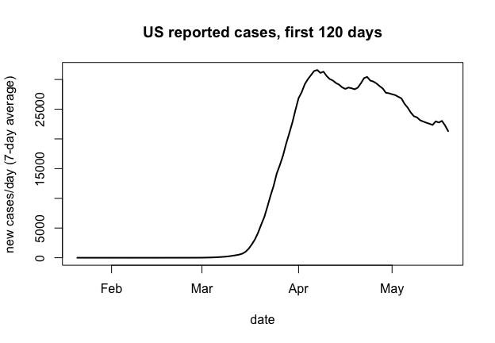
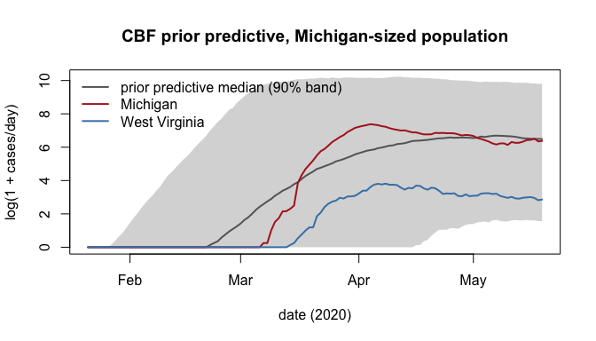
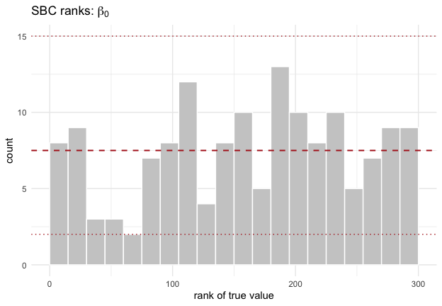
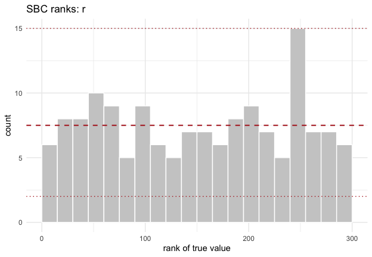
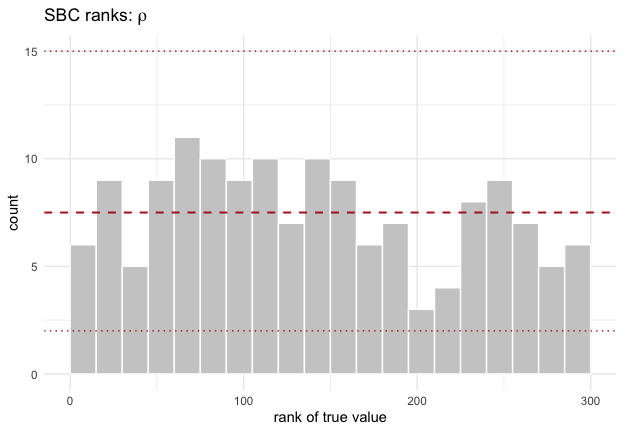
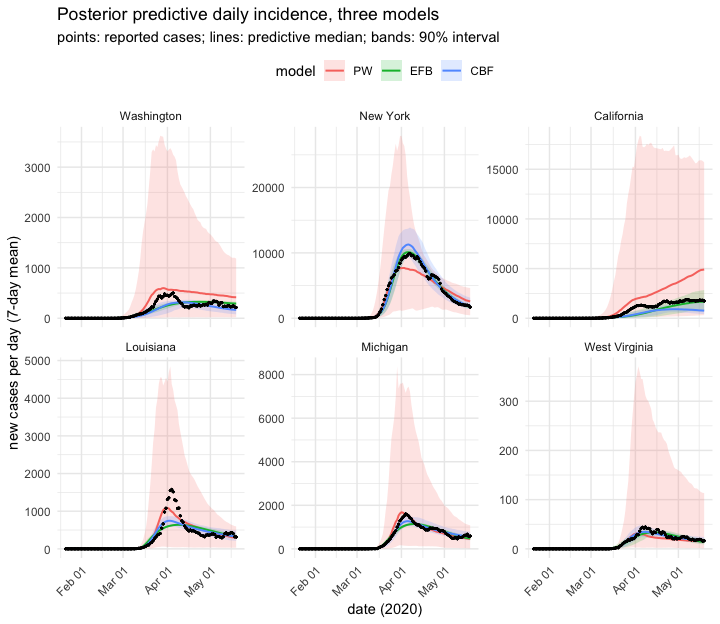
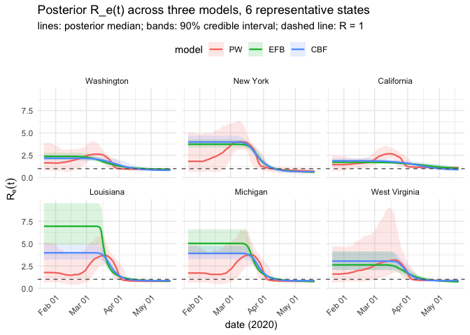
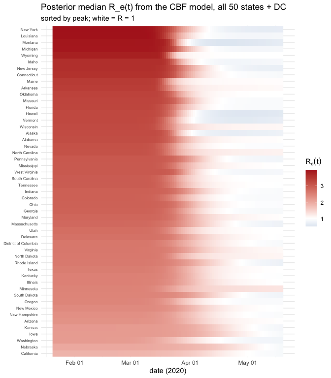

Amortized R(t): behavioral SIR models across all US states
Source:vignettes/sir-time-varying-beta.Rmd
sir-time-varying-beta.Rmdvignette("sir-epidemic") fits a stochastic SIR outbreak
with a constant contact rate
.
Real epidemics do not hold still, and the interesting question is
why they move. This vignette fits three competing
models of that mechanism to daily reported cases in all 50 US
states plus Washington, DC, over the first 120 days of the SARS-CoV-2
pandemic (2020-01-21 to 2020-05-19). Two are behavioral-feedback models
from Gozzi, Perra and Vespignani (2025, PNAS 122(24)
e2421993122), where transmission responds to what people see happening
around them. The third is a phenomenological baseline that lets
take a different constant value in each of a few time regimes.
Each model is trained once, amortized over the
prior, then conditioned on 51 state curves for the price of a forward
pass each. That is what makes a three-model, 51-jurisdiction comparison
affordable. Along the way we recover the effective reproduction
number
,
and show two pieces of neuralsbi machinery that matter for
time-series inference: an embedding_mlp() summary network,
and a prior predictive check that catches model error no amount of
training will fix.
The data: daily reported cases in the first 120 days
We use the New York Times’ state-level COVID-19 case counts, which start on 2020-01-21 (the first confirmed US case, in Snohomish County, Washington) and US Census population estimates.
cases_url <- "https://raw.githubusercontent.com/nytimes/covid-19-data/master/us-states.csv"
pop_url <- "https://raw.githubusercontent.com/COVID19Tracking/associated-data/master/us_census_data/us_census_2018_population_estimates_states.csv"
raw_cases <- read.csv(cases_url)
pop_table <- read.csv(pop_url)
raw_cases$date <- as.Date(raw_cases$date)
start_date <- as.Date("2020-01-21")
days <- 120L
end_date <- start_date + days - 1L
window <- raw_cases[raw_cases$date >= start_date & raw_cases$date <= end_date, ]
# the 50 states + DC only -- drop territories (Puerto Rico is the only one the
# population table also carries, so it needs an explicit exclusion)
state_names <- sort(setdiff(intersect(unique(window$state), pop_table$state_name),
"Puerto Rico"))
window <- window[window$state %in% state_names, ]
length(state_names)
#> [1] 51The NYT series is cumulative and not monotone: data revisions occasionally push the running total down. We difference it to daily new cases, clipping the revision artifacts at zero.
daily_cases <- function(state_df) {
full <- data.frame(date = seq(start_date, end_date, by = "day"))
full <- merge(full, state_df[, c("date", "cases")], by = "date", all.x = TRUE)
full$cases[is.na(full$cases)] <- 0
full$cases <- cummax(full$cases) # enforce a monotone cumulative count
new <- c(full$cases[1], diff(full$cases))
new[new < 0] <- 0 # data-revision artifacts
new
}
case_daily <- t(sapply(state_names, function(s) daily_cases(window[window$state == s, ])))
rownames(case_daily) <- state_names
pop <- stats::setNames(pop_table$population, pop_table$state_name)[state_names]
dim(case_daily)
#> [1] 51 120
range(pop)
#> [1] 577737 39557045Daily counts carry a strong weekday cycle that no SIR model generates. We take a centred 7-day mean as the summary statistic and apply the same smoother to simulated data, so the network learns for a summary that means the same thing on both sides. Smoothing only the observation would make simulated and observed data incomparable.
smooth7 <- function(m) {
m <- if (is.matrix(m)) m else matrix(m, nrow = 1)
out <- m
for (i in seq_len(ncol(m))) {
idx <- max(1L, i - 3L):min(ncol(m), i + 3L)
out[, i] <- rowMeans(m[, idx, drop = FALSE])
}
out
}
case_daily_s <- smooth7(case_daily)State populations span two orders of magnitude, from Wyoming (577,737) up to California (39,557,045). Population size is a known covariate, not something we infer, but one amortized posterior has to condition on it correctly for a 39-million-person state and a 600,000-person state alike.
national <- aggregate(cases ~ date, data = window, sum)
national <- national[order(national$date), ]
national$new <- pmax(c(national$cases[1], diff(national$cases)), 0)
national$new7 <- as.numeric(smooth7(national$new))
national$day <- as.numeric(national$date - start_date) + 1
plot(national$date, national$new7, type = "l", lwd = 2,
xlab = "date", ylab = "new cases/day (7-day average)",
main = "US reported cases, first 120 days")
plot of chunk national-curve
Notice the shape: a steep rise through March, then a broad, flat top from early April to the end of the window. That plateau is what the three models have to explain, and it is a real discriminator: a plain SIR epidemic with a fixed contact rate produces a sharp peak, not a shoulder.
Three mechanisms, one core
All three models share the same discrete-time, binomial-transition
SIR core from vignette("sir-epidemic"): counts update via
rbinom(), so the process is genuinely stochastic and there
is no tractable likelihood. Three modeling choices are shared by all
three and worth stating before the mechanisms that differ.
The epidemic starts when it starts. The arrival day and the seed size are inferred, not fixed. Seeding every state on 2020-01-21 is wrong about the world (Washington was seeded in January, West Virginia reported nothing until March 17) and wrong about the simulation: a supercritical branching process from two individuals has a large extinction probability and, conditional on survival, a takeoff time that wanders by weeks, so replicate simulations at a fixed differ by a factor of several thousand at the peak. Inferring pins the phase with a parameter instead of leaving it to luck.
Ascertainment is pinned by seroprevalence. Reported cases identify the product , not either factor: a small well-ascertained epidemic and an enormous barely-ascertained one give the same curve. Left free, the fit takes the second branch, driving into the low thousandths and the attack rate toward 1. Serology settles it from outside the case data: CDC’s commercial-lab study put spring-2020 infections at 6 to 24 times reported cases (Havers et al. 2020, JAMA Internal Medicine), i.e. between about 0.04 and 0.17. We encode a logit-normal prior centered at 0.10 with 95% mass in .
Population size is a known covariate. The simulator draws across real US state sizes during training and the estimator conditions on , so one network generalizes from Wyoming to California. The recovery rate is fixed: with only case counts the generation interval is not identifiable from , so we set days (Li et al. 2020, NEJM).
library(neuralsbi)
#>
#> Attaching package: 'neuralsbi'
#> The following object is masked from 'package:base':
#>
#> sample
gamma_fixed <- 1 / 7
t_grid <- seq_len(days)
PER <- 1e5 # behavioral drivers are per 100,000 peopleModel 1: piecewise-constant , the phenomenological baseline
This model makes no claim about why transmission changed: takes a different constant value in each of a few time regimes, blending over a roughly one-week logistic transition. It is a flexible curve fit, the arm the other two have to beat.
How many regimes, and where? We answer from the national curve,
fitting a continuous piecewise-linear regression to
log(new7) and selecting breakpoints by BIC.
nat <- national[national$new7 > 0, ]
y <- log(nat$new7); day <- nat$day; n_obs <- length(y)
fit_bic <- function(taus) {
X <- cbind(1, day, sapply(taus, function(tau) pmax(day - tau, 0)))
fit <- lm.fit(X, y)
if (any(is.na(fit$coefficients))) return(NULL)
rss <- sum(fit$residuals^2); p <- ncol(X)
list(bic = n_obs * log(rss / n_obs) + p * log(n_obs), taus = taus)
}
cand <- seq(10, 110, by = 5)
best_by_k <- lapply(0:6, function(k) {
if (k == 0) return(fit_bic(numeric(0)))
combs <- combn(cand, k); best <- NULL
for (j in seq_len(ncol(combs))) {
r <- fit_bic(combs[, j])
if (!is.null(r) && (is.null(best) || r$bic < best$bic)) best <- r
}
best
})
knot_table <- data.frame(
breakpoints = 0:6,
bic = sapply(best_by_k, `[[`, "bic"),
taus = sapply(best_by_k, function(b) paste(b$taus, collapse = ", ")))
knot_table$delta_bic <- c(NA, -diff(knot_table$bic))
knot_table
#> breakpoints bic taus delta_bic
#> 1 0 144.998766 NA
#> 2 1 6.394732 75 138.60403
#> 3 2 -246.682972 25, 70 253.07770
#> 4 3 -309.095418 20, 40, 65 62.41245
#> 5 4 -332.116366 20, 40, 60, 70 23.02095
#> 6 5 -360.414111 10, 20, 40, 60, 70 28.29775
#> 7 6 -373.016481 15, 20, 25, 35, 65, 75 12.60237BIC keeps improving out to 6 breakpoints, so it does not pick a winner alone; the breakpoint sets do. Going from 2 to 3 breakpoints refines the solution ({30, 70} becomes {25, 40, 70}), but going from 3 to 4 replaces it wholesale ({15, 20, 40, 70}, two breakpoints 5 days apart inside the low-count window). Stable refinements signal real inflections; a configuration that jumps signals a search fitting noise. We take 3 breakpoints (4 segments) as the last stable fit.
knot_days <- c(1, sort(best_by_k[[4]]$taus), days)
knot_days
#> [1] 1 20 40 65 120
n_segments <- length(knot_days) - 1L
nominal_dur <- diff(knot_days)
total_days <- sum(nominal_dur)
transition_scale <- 7 / 4Breakpoints move per state, because transmission and stay-at-home orders did not land on the same calendar day everywhere. We put a prior on each regime’s duration and take breakpoints as cumulative sums, so regimes tile the window in order for every draw and cannot cross. Only 3 of the 4 durations are free (the simulator rescales them to span the window), and parameterizing the free directions directly keeps every coordinate of identified. An unidentified coordinate would return its prior and look perfectly calibrated under SBC, so this matters.
beta_piecewise <- function(log_beta_segments, log_dur_ratio) {
n <- nrow(log_beta_segments)
w <- cbind(exp(log_dur_ratio), 1)
dur <- w / rowSums(w) * total_days
tau <- knot_days[1] + t(apply(dur, 1, cumsum))[, seq_len(n_segments - 1L), drop = FALSE]
w_ext <- c(list(matrix(1, n, days)),
lapply(seq_len(n_segments - 1L), function(k) {
outer(tau[, k], t_grid, function(a, t) plogis((t - a) / transition_scale))
}),
list(matrix(0, n, days)))
exp(Reduce(`+`, lapply(seq_len(n_segments), function(j) {
(w_ext[[j]] - w_ext[[j + 1]]) * log_beta_segments[, j]
})))
}Models 2 and 3: behavioral feedback
The two behavioral models from Gozzi, Perra and Vespignani (2025) need no external mobility data: transmission responds to the epidemic’s own reported output, which makes each a self-contained simulator, exactly what SBI wants.
EFB (effective force of infection). The force of infection is divided by a factor growing with recent and cumulative case experience: is reactivity to current news, to accumulated experience. Six parameters.
CBF (compartmental behavioral feedback). Susceptibles move into a risk-averse compartment at rate , drift back at rate , and while in their force of infection is scaled by . Behavior is a state that takes time to build and decay, not an instantaneous function of the news. Eight parameters.
We adapt the paper in two ways. It drives behavior off reported deaths; we drive it off reported cases, the only outcome this model generates. And we express the driver per 100,000 people rather than as a raw count, because one amortized posterior serves both Wyoming and California and behavior responds to per-capita risk. With a raw-count driver no single could fit both.
draw_N <- function(n, N_fixed) {
if (is.null(N_fixed)) exp(stats::runif(n, log(5e5), log(4e7))) else rep(N_fixed, n)
}
# x = log(N) followed by the 7-day-smoothed daily reported cases, log1p'd.
pack <- function(N, reported, S_frac, beta_eff, full) {
x <- cbind(log(N), log1p(smooth7(reported)))
if (!full) return(x)
list(x = x, reported = reported, S_frac = S_frac, beta_eff = beta_eff)
}
# shared: introduce the epidemic at t0 with a Poisson(seed_mean) seed
seed_step <- function(t, t0, seed_mean, S, I, seeded) {
fresh <- !seeded & (t >= t0)
if (any(fresh)) {
s0 <- pmin(stats::rpois(sum(fresh), seed_mean[fresh]), S[fresh])
I[fresh] <- I[fresh] + s0
S[fresh] <- S[fresh] - s0
seeded[fresh] <- TRUE
}
list(S = S, I = I, seeded = seeded)
}
sim_pw <- function(theta, N_fixed = NULL, full = FALSE) {
theta <- matrix(as.numeric(theta), ncol = 10L)
n <- nrow(theta)
beta_t <- beta_piecewise(theta[, 1:4, drop = FALSE], theta[, 5:7, drop = FALSE])
t0 <- 1 + (days - 1) * plogis(theta[, 8])
seed_mean <- exp(theta[, 9]); rho <- plogis(theta[, 10])
N <- draw_N(n, N_fixed)
S <- N; I <- rep(0, n); seeded <- rep(FALSE, n)
reported <- matrix(0, n, days); S_frac <- matrix(0, n, days)
n_sub <- 2L; dt <- 1 / n_sub; p_rec <- 1 - exp(-gamma_fixed * dt)
for (t in t_grid) {
st <- seed_step(t, t0, seed_mean, S, I, seeded); S <- st$S; I <- st$I; seeded <- st$seeded
H <- rep(0, n)
for (s in seq_len(n_sub)) {
p_inf <- pmin(pmax(1 - exp(-beta_t[, t] * I / N * dt), 0), 1)
dSI <- stats::rbinom(n, pmax(round(S), 0), p_inf)
dIR <- stats::rbinom(n, pmax(round(I), 0), p_rec)
S <- S - dSI; I <- I + dSI - dIR; H <- H + dSI # susceptibles deplete
}
S_frac[, t] <- S / N
reported[, t] <- stats::rbinom(n, pmax(round(H), 0), rho)
}
pack(N, reported, S_frac, beta_t, full)
}
sim_efb <- function(theta, N_fixed = NULL, full = FALSE) {
theta <- matrix(as.numeric(theta), ncol = 6L)
n <- nrow(theta)
beta0 <- exp(theta[, 1]); xi <- exp(theta[, 2]); psi <- exp(theta[, 3])
t0 <- 1 + (days - 1) * plogis(theta[, 4])
seed_mean <- exp(theta[, 5]); rho <- plogis(theta[, 6])
N <- draw_N(n, N_fixed)
S <- N; I <- rep(0, n); seeded <- rep(FALSE, n)
c_prev <- rep(0, n); C_cum <- rep(0, n)
reported <- matrix(0, n, days); S_frac <- matrix(0, n, days)
beta_eff <- matrix(0, n, days)
n_sub <- 2L; dt <- 1 / n_sub; p_rec <- 1 - exp(-gamma_fixed * dt)
for (t in t_grid) {
st <- seed_step(t, t0, seed_mean, S, I, seeded); S <- st$S; I <- st$I; seeded <- st$seeded
bt <- beta0 / (1 + xi * c_prev + psi * C_cum) # the behavioral response
beta_eff[, t] <- bt
H <- rep(0, n)
for (s in seq_len(n_sub)) {
p_inf <- pmin(pmax(1 - exp(-bt * I / N * dt), 0), 1)
dSI <- stats::rbinom(n, pmax(round(S), 0), p_inf)
dIR <- stats::rbinom(n, pmax(round(I), 0), p_rec)
S <- S - dSI; I <- I + dSI - dIR; H <- H + dSI
}
S_frac[, t] <- S / N
rep_t <- stats::rbinom(n, pmax(round(H), 0), rho)
reported[, t] <- rep_t
c_prev <- rep_t / N * PER # per 100k, so one xi fits every state
C_cum <- C_cum + c_prev
}
pack(N, reported, S_frac, beta_eff, full)
}
sim_cbf <- function(theta, N_fixed = NULL, full = FALSE) {
theta <- matrix(as.numeric(theta), ncol = 8L)
n <- nrow(theta)
beta0 <- exp(theta[, 1]); betaB <- exp(theta[, 2]); g <- exp(theta[, 3])
r <- plogis(theta[, 4]); muB <- exp(theta[, 5])
t0 <- 1 + (days - 1) * plogis(theta[, 6])
seed_mean <- exp(theta[, 7]); rho <- plogis(theta[, 8])
N <- draw_N(n, N_fixed)
S <- N; SB <- rep(0, n); I <- rep(0, n); seeded <- rep(FALSE, n)
c_prev <- rep(0, n)
reported <- matrix(0, n, days); S_frac <- matrix(0, n, days)
beta_eff <- matrix(0, n, days)
n_sub <- 2L; dt <- 1 / n_sub; p_rec <- 1 - exp(-gamma_fixed * dt)
for (t in t_grid) {
st <- seed_step(t, t0, seed_mean, S, I, seeded); S <- st$S; I <- st$I; seeded <- st$seeded
pB <- betaB * (1 - exp(-g * c_prev)) # awareness-driven uptake
H <- rep(0, n)
for (s in seq_len(n_sub)) {
lam <- beta0 * I / N
# a susceptible faces competing risks -- infection or adopting safer
# behavior -- so draw the total departures and split them, rather than
# letting whichever event is applied first pre-empt the other
tot_haz <- lam + pB
dS <- stats::rbinom(n, pmax(round(S), 0),
pmin(pmax(1 - exp(-tot_haz * dt), 0), 1))
dSI <- stats::rbinom(n, dS, ifelse(tot_haz > 0, lam / tot_haz, 0))
dSB <- dS - dSI
dBI <- stats::rbinom(n, pmax(round(SB), 0),
pmin(pmax(1 - exp(-r * lam * dt), 0), 1))
dBS <- stats::rbinom(n, pmax(round(SB) - dBI, 0),
pmin(pmax(1 - exp(-muB * dt), 0), 1))
dIR <- stats::rbinom(n, pmax(round(I), 0), p_rec)
S <- S - dS + dBS; SB <- SB + dSB - dBI - dBS
I <- I + dSI + dBI - dIR; H <- H + dSI + dBI
}
S_frac[, t] <- (S + SB) / N
# transmission rate averaged over the susceptible pool, for reporting R_e
beta_eff[, t] <- beta0 * (S + r * SB) / pmax(S + SB, 1)
rep_t <- stats::rbinom(n, pmax(round(H), 0), rho)
reported[, t] <- rep_t
c_prev <- rep_t / N * PER
}
pack(N, reported, S_frac, beta_eff, full)
}Every parameter is unconstrained on
:
the log/logit transforms mean a single Gaussian prior with no truncated
support, so the posterior needs no rejection sampling for leakage.
Naming each mean vector carries the names through every
posterior draw, SBC result, and plot.
means different things across families: in the piecewise model it is an
effective rate per regime, centred on
;
in the behavioral models it is the intrinsic transmission rate
with the decline explained mechanistically, centred on
.
prior_pw <- prior_normal(
mean = stats::setNames(
c(rep(log(0.28), n_segments),
log(nominal_dur[-n_segments] / nominal_dur[n_segments]),
qlogis(35 / days), log(30), qlogis(0.10)),
c(paste0("beta[", seq_len(n_segments), "]"),
paste0("d[", seq_len(n_segments - 1L), "]"), "t[0]", "I[0]", "rho")),
sd = c(rep(0.6, n_segments), rep(0.35, n_segments - 1L), 1.1, 1.2, 0.4))
prior_efb <- prior_normal(
mean = stats::setNames(
c(log(3 * gamma_fixed), log(0.05), log(0.001),
qlogis(35 / days), log(30), qlogis(0.10)),
c("beta[0]", "xi", "psi", "t[0]", "I[0]", "rho")),
sd = c(0.30, 1.5, 1.5, 1.1, 1.2, 0.4))
prior_cbf <- prior_normal(
mean = stats::setNames(
c(log(3 * gamma_fixed), log(0.1), log(0.5), qlogis(0.3), log(0.02),
qlogis(35 / days), log(30), qlogis(0.10)),
c("beta[0]", "beta[B]", "g", "r", "mu[B]", "t[0]", "I[0]", "rho")),
sd = c(0.30, 1.0, 1.5, 1.0, 1.0, 1.1, 1.2, 0.4))Summarizing 120 days with an embedding network
The observation is 121 numbers:
plus a 120-day case curve. Passing that straight into the flow wastes
capacity, and choosing summary statistics by hand throws away whatever
the chosen set missed. embedding_mlp() learns the
compression instead: a small MLP maps the standardized 121-dimensional
observation to output_dim features, trained
jointly with the density estimator so the features are
optimized for one thing, predicting
.
The estimator then conditions on those features rather than the raw
curve.
embed <- embedding_mlp(output_dim = 12L, hidden = c(64L, 64L))
embed
#> $type
#> [1] "mlp"
#>
#> $output_dim
#> [1] 12
#>
#> $hidden
#> [1] 64 64
#>
#> attr(,"class")
#> [1] "nsbi_embedding"Check the prior predictive before training anything
Amortized NPE learns over the prior predictive distribution of . Data the prior predictive essentially never produces fall where the network is extrapolating, and its posterior there cannot be trusted. So before spending a simulation budget, check that each model can produce curves like the ones we mean to condition on.
set.seed(11)
n_pp <- 1500
sims <- list(PW = list(sim = sim_pw, prior = prior_pw),
EFB = list(sim = sim_efb, prior = prior_efb),
CBF = list(sim = sim_cbf, prior = prior_cbf))
pp_check <- function(m, state) {
theta <- sample_prior(m$prior, n_pp)
lx <- m$sim(theta, N_fixed = pop[[state]])[, -1, drop = FALSE] # already log1p
d <- rowMeans(abs(lx - rep(log1p(case_daily_s[state, ]), each = n_pp)))
mean(d < 1)
}
round(sapply(sims, function(m) sapply(c("New York", "Michigan", "West Virginia"),
function(s) pp_check(m, s))), 4)
#> PW EFB CBF
#> New York 0.0553 0.1760 0.0893
#> Michigan 0.0320 0.2373 0.0927
#> West Virginia 0.1187 0.2233 0.1760The number to watch is the fraction of prior draws landing within a factor of of the observed curve. It is small (the priors are deliberately vague) but not a rounding error, so the observations land inside the bulk of each prior predictive. Fixing the seeding day at day 1 fails this check: West Virginia’s seven empty weeks could then only come from a sub-threshold contact rate, which usually goes extinct, dropping the observed curve out of the band.
theta_pp <- sample_prior(prior_cbf, n_pp)
mi <- expm1(sim_cbf(theta_pp, N_fixed = pop[["Michigan"]])[, -1, drop = FALSE])
env <- apply(log1p(mi), 2, stats::quantile, c(0.05, 0.5, 0.95))
dates <- start_date + t_grid - 1
plot(dates, env[2, ], type = "n", ylim = range(env), xlab = "date (2020)",
ylab = "log(1 + cases/day)", main = "CBF prior predictive, Michigan-sized population")
polygon(c(dates, rev(dates)), c(env[1, ], rev(env[3, ])), col = "grey85", border = NA)
lines(dates, env[2, ], lwd = 2, col = "grey40")
lines(dates, log1p(case_daily_s["Michigan", ]), lwd = 2, col = "firebrick")
lines(dates, log1p(case_daily_s["West Virginia", ]), lwd = 2, col = "steelblue")
legend("topleft", bty = "n", lwd = 2, col = c("grey40", "firebrick", "steelblue"),
legend = c("prior predictive median (90% band)", "Michigan", "West Virginia"))
plot of chunk prior-pred-plot
Train all three
We fit each model once, amortized across the whole prior including the full range of state sizes, then reuse that fit for all 51 jurisdictions at a forward pass each.
n_sim <- 15000
fits <- lapply(sims, function(m) {
npe(m$prior, m$sim, n_simulations = n_sim, density_estimator = "maf",
embedding_net = embed, max_epochs = 300, n_restarts = 1,
seed = 1, verbose = FALSE)
})
fits$CBF
#> <nsbi_npe> Neural Posterior Estimation fit
#> density estimator : maf
#> parameters (dim) : 8
#> names : beta[0], beta[B], g, r, mu[B], t[0], I[0], rho
#> data (dim) : 121
#> embedding (mlp) : 121 -> 12 features
#> simulations : 15000
#> best val loss : 2.6726
#> -> build a posterior with posterior(fit, x_obs = ...)Validate before trusting a single curve
Simulation-based calibration (SBC) checks that each posterior’s credible intervals have the coverage they claim, using fresh prior draws the network never saw. For each simulated “true” parameter we rank it among posterior draws conditioned on the resulting data; if the posterior is calibrated the rank is uniform, so the histogram should be flat. Skew toward the edges means overconfidence, toward the middle underconfidence.
sbc_res <- lapply(names(fits), function(nm)
sbc(fits[[nm]], sims[[nm]]$sim, n_sbc = 150, n_posterior_samples = 300, seed = 2))
names(sbc_res) <- names(fits)
sbc_res$CBF
#> <nsbi_sbc> 150 trials, 300 posterior samples each
#> per-parameter uniformity p-values (large = calibrated):
#> beta[0]=0.234 beta[B]=0.701 g=0.138 r=0.828 mu[B]=0.436 t[0]=0.768 I[0]=0.996 rho=0.855Because each prior’s mean was a named vector,
plot_sbc() renders each parameter’s plotmath symbol in the
panel title instead of a generic “parameter 3”.
plot_sbc(sbc_res$CBF, param = 1L)
plot of chunk sbc-beta0
plot_sbc(sbc_res$CBF, param = 4L)
plot of chunk sbc-r
plot_sbc(sbc_res$CBF, param = 8L)
plot of chunk sbc-rho
Posterior predictive: daily incidence, three models
For each state we condition each posterior on that state’s own curve and population, push the draws through the simulator, and compare predicted daily incidence to what was reported. We summarize by the median, not the mean: the daily predictive is strongly right-skewed on this log-trained scale, so its mean tracks the upper tail and makes a calibrated fit look like a systematic overshoot.
highlight <- c("Washington", "New York", "California", "Louisiana", "Michigan", "West Virginia")
obs_for <- function(s) c(log(pop[[s]]), log1p(case_daily_s[s, ]))
pred_for <- function(nm, state, n_draws = 400) {
post <- posterior(fits[[nm]], x_obs = obs_for(state))
draws <- sample(post, n_draws)
r <- sims[[nm]]$sim(draws, N_fixed = pop[[state]], full = TRUE)
pred <- smooth7(r$reported)
data.frame(model = nm, state = state, date = start_date + t_grid - 1,
observed = case_daily_s[state, ],
med = apply(pred, 2, stats::median),
lo = apply(pred, 2, stats::quantile, 0.05),
hi = apply(pred, 2, stats::quantile, 0.95))
}
pp <- do.call(rbind, lapply(names(fits), function(nm)
do.call(rbind, lapply(highlight, function(s) pred_for(nm, s)))))
pp$state <- factor(pp$state, levels = highlight)
pp$model <- factor(pp$model, levels = c("PW", "EFB", "CBF"))
library(ggplot2)
# Natural count axis, one free y-range per facet. Daily counts run from a
# handful in West Virginia to five figures in New York, so a shared linear axis
# would let the largest state set the range and flatten every smaller one.
ggplot(pp, aes(date)) +
geom_ribbon(aes(ymin = lo, ymax = hi, fill = model), alpha = 0.18) +
geom_line(aes(y = med, colour = model), linewidth = 0.7) +
geom_point(aes(y = observed), colour = "black", size = 0.35) +
facet_wrap(~state, ncol = 3, scales = "free_y") +
scale_x_date(date_labels = "%b %d") +
labs(x = "date (2020)", y = "new cases per day (7-day mean)",
title = "Posterior predictive daily incidence, three models",
subtitle = "points: reported cases; lines: predictive median; bands: 90% interval") +
theme_minimal() +
theme(axis.text.x = element_text(angle = 45, hjust = 1),
legend.position = "top")
plot of chunk post-pred
The three bands differ strikingly in width: the piecewise band is an order of magnitude wider at New York’s peak than either behavioral band. That is not overconfidence. Hold fixed and re-simulate, and whatever spread survives is the simulator’s own process noise, with no posterior uncertainty in it.
# One representative theta per model (the coordinatewise posterior median --
# not necessarily a high-density point for a correlated posterior, but it
# produces a New-York-like epidemic, which is all this diagnostic needs).
noise_at_fixed_theta <- function(nm, state = "New York", n_rep = 300) {
draws <- sample(posterior(fits[[nm]], x_obs = obs_for(state)), 500)
one <- apply(draws, 2, stats::median)
rep_theta <- matrix(rep(one, n_rep), nrow = n_rep, byrow = TRUE)
r <- sims[[nm]]$sim(rep_theta, N_fixed = pop[[state]], full = TRUE)
pred <- smooth7(r$reported)
j <- which.max(case_daily_s[state, ])
c(peak_cv = stats::sd(pred[, j]) / mean(pred[, j]),
peak_day_sd = stats::sd(apply(pred, 1, which.max)))
}
round(t(sapply(names(fits), noise_at_fixed_theta)), 4)
#> peak_cv peak_day_sd
#> PW 0.1673 10.3788
#> EFB 0.0048 0.8898
#> CBF 0.0145 0.8283The open-loop piecewise model has roughly an order of magnitude more peak-height variability at fixed than either behavioral model: feedback damps the demographic noise an open-loop model lets through. A behavioral model is therefore intrinsically more predictable at the same parameter values, and most of the narrow band is mechanism, not posterior. Whether the remaining width is honest is what the SBC histograms above answer, which is why they come first.
A quantitative score across all 51 states: root-mean-square error of the predictive median against the observed curve, on the scale the estimator works in.
score_state <- function(nm, state, n_draws = 300) {
post <- posterior(fits[[nm]], x_obs = obs_for(state))
r <- sims[[nm]]$sim(sample(post, n_draws), N_fixed = pop[[state]], full = TRUE)
med <- apply(smooth7(r$reported), 2, stats::median)
c(rmse = sqrt(mean((log1p(med) - log1p(case_daily_s[state, ]))^2)),
attack = stats::median(1 - r$S_frac[, days]),
R0 = stats::median(r$beta_eff[, 1]) / gamma_fixed)
}
scores <- do.call(rbind, lapply(names(fits), function(nm) {
m <- t(sapply(state_names, function(s) score_state(nm, s)))
data.frame(model = nm, rmse_med = median(m[, "rmse"]),
rmse_iqr = paste(round(stats::quantile(m[, "rmse"], c(.25, .75)), 2), collapse = "-"),
attack_med = median(m[, "attack"]),
n_param = fits[[nm]]$dim_theta)
}))
scores
#> model rmse_med rmse_iqr attack_med n_param
#> 1 PW 0.2352627 0.19-0.3 0.04166990 10
#> 2 EFB 0.2108746 0.15-0.29 0.02389311 6
#> 3 CBF 0.1757844 0.14-0.23 0.02538268 8R(t) for every state
The effective reproduction number is secondary cases per infection given the susceptibles still available. The factor is not decoration: in New York a substantial share of the population had been infected by mid-May, so ends the window well below what the transmission rate alone suggests. We compute both factors from the simulator’s own state trajectories rather than re-deriving , so the reported quantity and the fitted model cannot drift apart.
The highlight panels overlay all three models so their trajectories can be compared directly. The heatmap uses whichever model scored best, which is not a fixed choice: the three are close enough that the winner can move with the simulation budget.
best <- as.character(scores$model[which.min(scores$rmse_med)])
best
#> [1] "CBF"
rt_state <- function(state, nm, n_draws = 400) {
post <- posterior(fits[[nm]], x_obs = obs_for(state))
r <- sims[[nm]]$sim(sample(post, n_draws), N_fixed = pop[[state]], full = TRUE)
rt <- r$beta_eff / gamma_fixed * r$S_frac
data.frame(model = nm, state = state, date = start_date + t_grid - 1,
rt_med = apply(rt, 2, stats::median),
rt_lo = apply(rt, 2, stats::quantile, 0.05),
rt_hi = apply(rt, 2, stats::quantile, 0.95),
attack = stats::median(1 - r$S_frac[, days]))
}
rt_all <- do.call(rbind, lapply(names(fits), function(nm)
do.call(rbind, lapply(state_names, function(s) rt_state(s, nm)))))
rt_all$model <- factor(rt_all$model, levels = c("PW", "EFB", "CBF"))
rt_best <- rt_all[rt_all$model == best, ]The inferred attack rates are the sanity check on the ascertainment prior: what and the case counts jointly imply about how much of each state had been infected by 2020-05-19, read off the best-scoring model.
attack_by_state <- tapply(rt_best$attack, rt_best$state, `[`, 1)
round(quantile(attack_by_state, c(0, 0.25, 0.5, 0.75, 1)), 4)
#> 0% 25% 50% 75% 100%
#> 0.0049 0.0165 0.0253 0.0520 0.2627
round(sort(attack_by_state, decreasing = TRUE)[1:5], 3)
#> New York Rhode Island New Jersey
#> 0.263 0.203 0.202
#> Massachusetts District of Columbia
#> 0.163 0.140
rt_h <- rt_all[rt_all$state %in% highlight, ]
rt_h$state <- factor(rt_h$state, levels = highlight)
ggplot(rt_h, aes(date, rt_med, colour = model, fill = model)) +
geom_ribbon(aes(ymin = rt_lo, ymax = rt_hi), alpha = 0.15, colour = NA) +
geom_line(linewidth = 0.8) +
geom_hline(yintercept = 1, linetype = 2, colour = "grey40") +
facet_wrap(~state, ncol = 3) +
scale_x_date(date_labels = "%b %d") +
labs(x = "date (2020)", y = expression(R[e](t)),
title = "Posterior R_e(t) across three models, 6 representative states",
subtitle = "lines: posterior median; bands: 90% credible interval; dashed line: R = 1") +
theme_minimal() +
theme(axis.text.x = element_text(angle = 45, hjust = 1),
legend.position = "top")
plot of chunk rt-highlight
The three models agree where the data are informative, through the March climb and April decline, and separate mainly in the low-count tails, before a state’s introduction and at the end of the window, where mechanism rather than data does the talking.
The heatmap condenses all 51 jurisdictions into one view, using the best-scoring model.
peak_order <- names(sort(tapply(rt_best$rt_med, rt_best$state, max), decreasing = TRUE))
rt_best$state <- factor(rt_best$state, levels = rev(peak_order))
ggplot(rt_best, aes(date, state, fill = rt_med)) +
geom_raster() +
scale_fill_gradient2(midpoint = 1, low = "steelblue", mid = "white",
high = "firebrick", name = expression(R[e](t))) +
scale_x_date(date_labels = "%b %d") +
labs(x = "date (2020)", y = NULL,
title = paste0("Posterior median R_e(t) from the ", best, " model, all 50 states + DC"),
subtitle = "sorted by peak; white = R = 1") +
theme_minimal() +
theme(axis.text.y = element_text(size = 6))
plot of chunk rt-heatmap
is flat before a state’s inferred introduction (no epidemic, nothing to constrain transmission, so the posterior stays near the prior), climbs through early-to-mid March, and comes back toward and below 1 by mid-to-late April, with heterogeneity in timing and magnitude that a single national estimate would hide.
What this comparison bought
The alternative to amortized NPE is fitting each model to each state separately: 153 particle filters or MCMC chains, 153 chances for one to fail to converge. Here training happened three times (1.5 × 104 simulations each), and every state’s posterior under every model cost a forward pass. Three lessons generalize past this dataset.
Do not leave the epidemic’s phase to demographic noise. A branching process from a couple of infections, run for four months, has a final size spread across orders of magnitude and a takeoff time that wanders by weeks. Inferring absorbs that, and the recovered introduction days are a free check: the posterior puts New York’s near March 1 and West Virginia’s in mid-March, matching when those states reported their first cases.
Do not let case counts alone set the epidemic’s scale. They identify , and without external information on the fit slides toward vast, barely-ascertained epidemics. Seroprevalence breaks the tie, and it belongs in the prior.
A mechanism can be cheaper than a curve fit. The piecewise model needs 10 parameters to bend into shape and, having no mechanism, reports transmission rates for regimes that ended before the state’s epidemic began. The behavioral models get comparable fits from 6 and 8 parameters and give a physical meaning to each.
One structural difference between the behavioral models is invisible in a first-wave window and decisive outside one. EFB’s denominator contains the cumulative case count, which only grows, so its is monotone non-increasing: it can bend an epidemic down but never let it come back. CBF can, because lets risk-averse individuals drift back into the susceptible pool once incidence falls. This is the likeliest reason the original study found CBF the better forecaster.
The models carry real simplifications.
is fixed, so sbc() is calibrated conditional on that
choice. A single
stands in for testing capacity that grew steeply over exactly this
window; a time-varying
is the obvious next refinement, at the cost of confounding with
transmission. Each state gets one introduction, whereas states with
large international airports saw imported cases for weeks first, which
is why California fits worst. And Louisiana’s Mardi Gras superspreading
produced a spike no smooth behavioral response can reproduce. Loosening
any of these is a change to the simulator, not to the inference
machinery around it.
For the underlying workflow in more depth, see
vignette("sir-epidemic"),
vignette("diagnostics"), and
vignette("density-estimators").